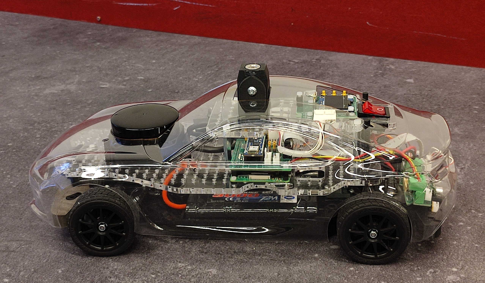
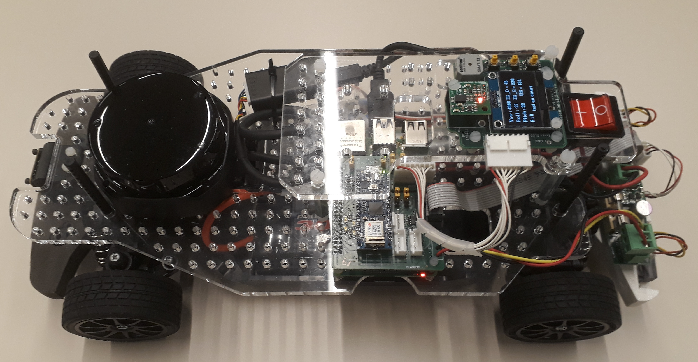
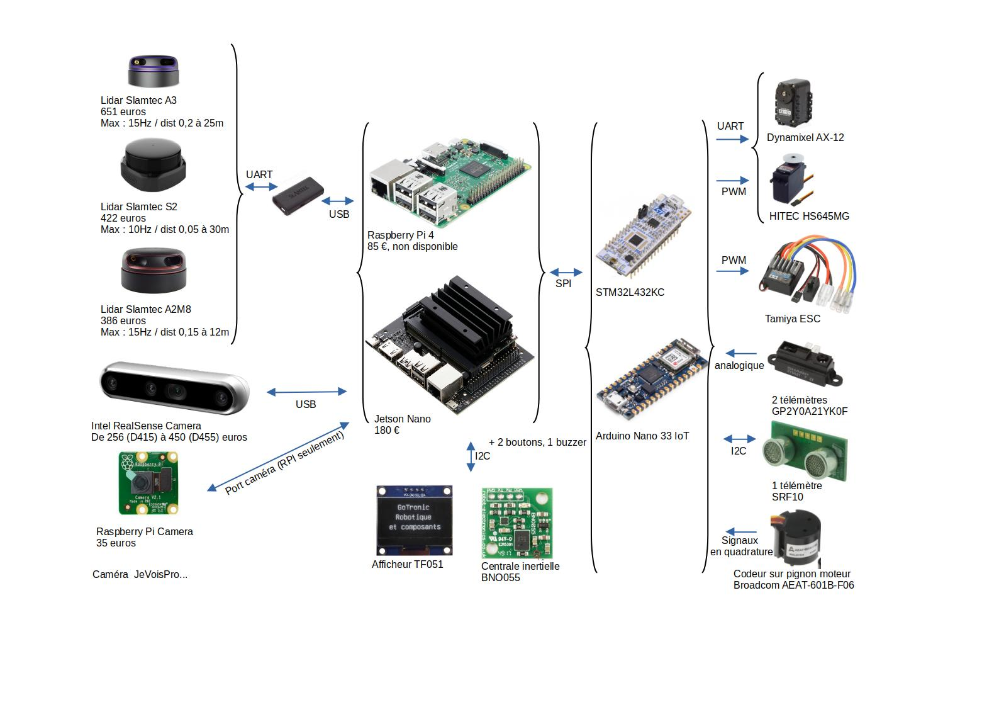
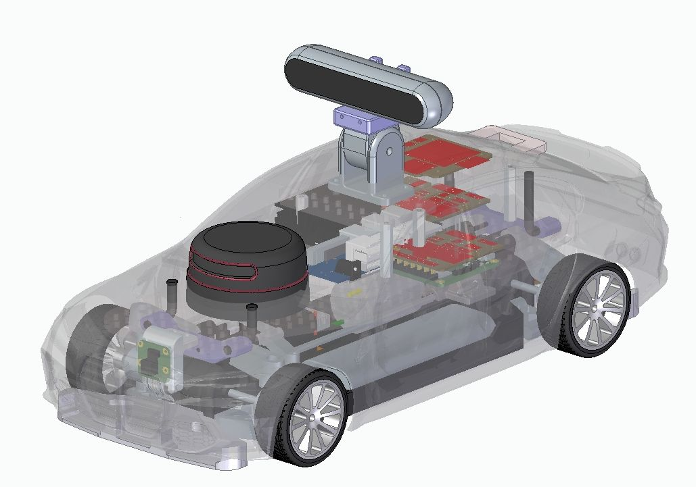
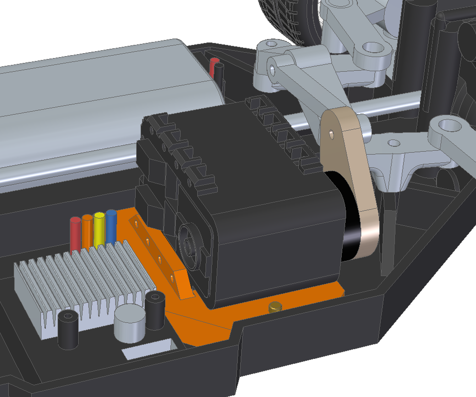
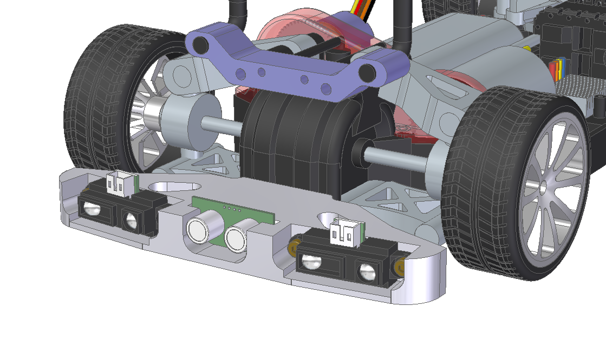

Typical Car for the Paris Saclay Autonomous Car Race
A typical car is proposed for the autonomous car race. The complete kit and the kit {electronic boards, specific mechanical parts} have been available for sale since January 2023, particularly for teams without mechanical and/or electronic manufacturing resources.
This typical car is only an example to help teams get started. It is meant to be improved upon.


Control-command
The block diagram of the control-command section is as follows, with several options for Lidar, cameras, nano-computers, or microcontrollers:

The electronic schematics in Eagle format and in PDF are provided in the Equipment folder of the Git repository.
Mechanics
Mechanical parts allow the adaptation of the TT-02 chassis to these control-command equipment. STL files are provided in the Equipment folder of the Git repository.
Outre les découpes propres de carrosserie, l'élément majeur de ce kit est la modification de la roue dentée de l'axe de transmission, l'ajout d'une fourche optique et d'un nouveau carter pour permettre la mesure de la vitesse du moteur.
Le kit propose notamment la possibilité d'utiliser un servo-moteur numérique AX-12 à la place du servo-moteur analogique standard.

Finally, the 3D parts allow for a clean attachment of the sensors at the front (Raspberry camera) as well as at the rear (IR and/or ultrasonic rangefinders).

List of Equipment
Here is a list of equipment, suppliers, and indicative prices including VAT.
- Tamiya TT-02 Toyota GR 86 KIT ref 58694 - RCTeam 58694 - €134.90
- Konect Servo 9kg 0.13s Digital KN-0913LVMG - RCTeam KN-0913LVMG - €19.90
- ORION Charger IQ801 1A - RCTeam ORI30197 - €15.90
-
T2M Battery 7.2v Nimh 3000mah - RCTeam T1006300 - €27.30
-
Raspberry Pi 4 Model B - Kubii PI48GB - €94.50
- Official black Micro-HDMI to HDMI cable 1M - Kubii SC0270 - €4.80
- Micro-SD Card Class 10 32 GB - Kubii KG32_DEL - €8.94
- Official Power Supply for Raspberry Pi 4 15.3W USB-C - Kubii ALIMPI4 - €9.60
- Camera Module v2 8MP - Kubii 2510728 - €25.80
-
Cable for Raspberry Pi Camera 30 cm - Kubii kub1645-PRD - €0.96
-
Laser Distance Scanner RPLIDAR A2M12 360 Slamtec A2-M12 - Roboshop RB-Rpk-22 - €269.03
-
USBA – microUSB cable 20 cm - RS 182-8869 - €3.14
-
Sonar Module SRF10 Devantech - Roboshop RB-Dev-10 - €36.86
- 2 Distance Sensors GP2Y0A41SK0F IR Sharp - 4 to 30 cm - Roboshop RB-Dem-04 - €22.44
- Absolute Orientation Module 9 DOF BNO055 Devantech - Roboshop RB-Dev-91 - €31.73
- Nano 33 IoT module with Arduino headers - RS 192-7589 - €25.98
-
Optical fork, with cables OPTEK TECHNOLOGY OPB815WZ - Farnell 1497919 - €5.39
-
Total of off-the-shelf modules €737.17
Options:
Jetson Nano instead of the Raspberry Pi:
- NVIDIA Jetson Nano 4GB Development Kit - Kubii DEV-4GB - €202.80
STM32 instead of the Arduino board:
- Nucleo STM32L432KC Board - Farnell 2580786 - €12.89
- USB Cable RS PRO, Micro-USB B to USB A, 0.5m - RS 236-9078 - €2.89
Digital servo instead of the analog steering servo:
- Dynamixel AX-12 Digital Servo - Gotronic 36433 - €41
Camera to place on the roof:
- Realsense D435i Camera - Digikey 2311-82635D435IDKMP-ND - €445.54
- HUSKYLENS Module DFROBOT SEN0305 - Farnell 3517863 - €65.30
- Integrated Husky Lens Pro AI Module DFROBOT SN0336 - Farnell 3517864 - €89.10
CRIC offers all the electronic boards for the typical car for €250 and all the mechanical parts for €260.